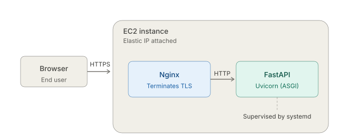
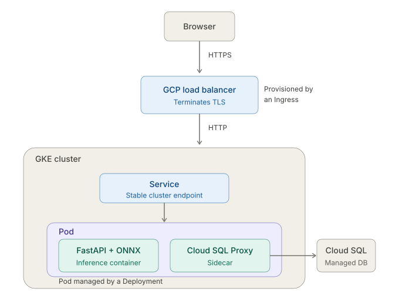

What is service?
A service is a software program designed to fulfill a specific purpose by providing a distinct set of functionalities. By that definition alone, though, a library or a script could qualify too. What sets a service apart is its design pattern: it continuously listens for incoming requests, routes them to specific endpoints for processing, and returns the appropriate responses to its clients. Services are generally meant to be reached by end-users or other client programs over a network.
During the software lifecycle, a service can move through multiple environments from development and testing to staging. For instance, a team might build a web service for an AI annotation workflow, initially running it locally to write and test the code. This allows the team members to inspect the features, discuss and decide on how they should be refined. One of the misconceptions about services is that a program only becomes a real service once it is deployed, which is not true. Even before the deployment, it is still fully functioning as a service, but it is simply restricted to the developers rather than being open to the public. What makes a service a service is its purpose and its design pattern, not where it happens to be running.
What is server?
A server is the physical or virtual machine that provides computational and storage resources required to run such services. In this context, the term "server" refers to the role of accomodating services rather than a specific type of hardware. For example, a personal laptop can act as a server if it runs software that continuously listens for and processes requests. A laptop running a local PostgreSQL instance effectively functions as a database server, since it provides database services to client applications.
In data centers, physical machines serve as the underlying infrastructure. Hypervisors run on these physical machines and allocate their compute resources across multiple virtual machines (VMs). Cloud providers such as GCP, AWS, and Azure offer these virtual machines as computing resources that users can rent on demand. In the cloud computing context, the term instance is commonly used to refer to a single running virtual machine. Here are a few examples of how the term "instance" is used in the cloud:
- EC2 instance: A running virtual machine.
- Cloud SQL instance: A database managemet service with a virtual machine.
- GKE Node: A virtual machine provisioned as a part of a Kubernetes cluster.
While all three are virtual machines at their core, they are not the same kind of thing. An EC2 instance is essentially an empty machine, that AWS provisions with an OS and leaves the rest to us. A GKE Node, on the other hand, comes pre-installed with the Kubernetes software needed to run containerized workloads. A Cloud SQL instance goes even further. Its underlying VM is fully managed by Google and never directly exposed. What we interact with is the database service running on top of it, not the machine itself.
Real-World Deployment
Understanding the relationship between a server and a service is easiest to see in a concrete example. Let me walk through two different ways I have personally deployed the services.
1. FastAPI + Nginx on Single EC2 Instance
I implemented a web application with a frontend (HTML and JS) and a backend built with FastAPI, which I then deployed on a single AWS EC2 instance.
When a user interacts with the frontend, the UI triggers actions that send network requests to a specific domain name. The browser first asks a DNS resolver to translate that domain into an IP address. Once resolved, the browser opens a network connection to that IP address to route the requests, which, in my case, is an Elastic IP attached to my EC2 instance.
At the edge of the server, Nginx runs as a reverse proxy. It accepts incoming HTTPS requests from the public internet, terminates TLS and forwards the resulting HTTP requests internally to the FastAPI process listening on localhost. The FastAPI application runs through an ASGI server such as Uvicorn, while systemd supervises the process, starts it on boot, and restarts it if it crashes. This gives the service a basic level of resilience.

2. AI Microservice (Docker & Kubernetes)
I constructed a microservice for AI model inference. First, I converted my trained model into ONNX format for optimized performance. To optimize computational performance, I first converted the trained model into the ONNX format. Next, I implemented the inference pipeline within a FastAPI application. This application exposes a dedicated API endpoint. Users or client applications can interact with this microservice directly over HTTPS (using tools like curl) by sending data to this endpoint, which then executes a forward pass through the model and returns the computed results. I then containerized this FastAPI service using Docker and deployed it to a Kubernetes (K8s) cluster.
Within the cluster, this application runs inside a Kubernetes Pod, utilizing the sidecar pattern. Alongside the main inference container, I also deployed Cloud SQL Proxy sidecar. Whenever the application needs to read or write data, it talks to this sidecar, which securely tunnels the information to a GCP Cloud SQL database. To orchestrate this infrastructure, I defined the cluster state using three core Kubernetes YAML manifests:
- Service: Provides a stable internal network IP, and load-balances the traffic across the active Pods.
- Ingress: Acts as the cluster's entry point, securely routing external internet traffic to the internal Service.
- Deployment: Maintains the desired number of Pods are running.
